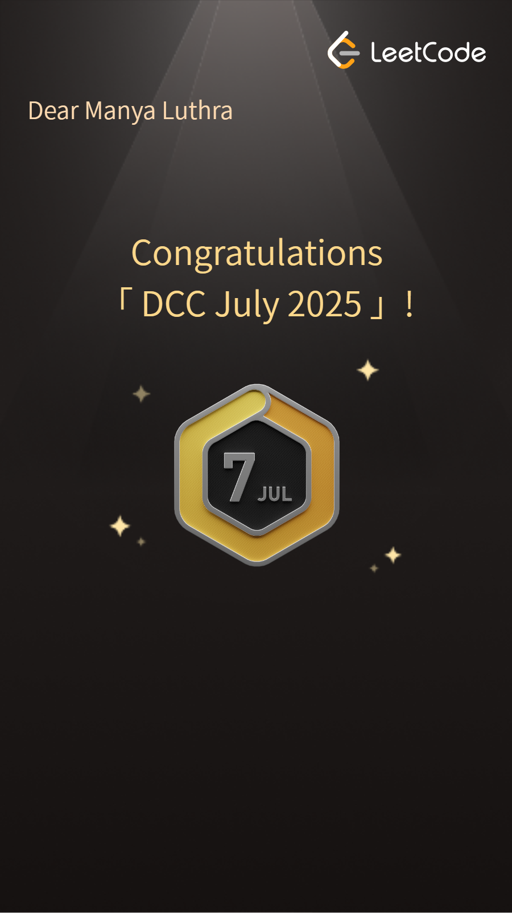
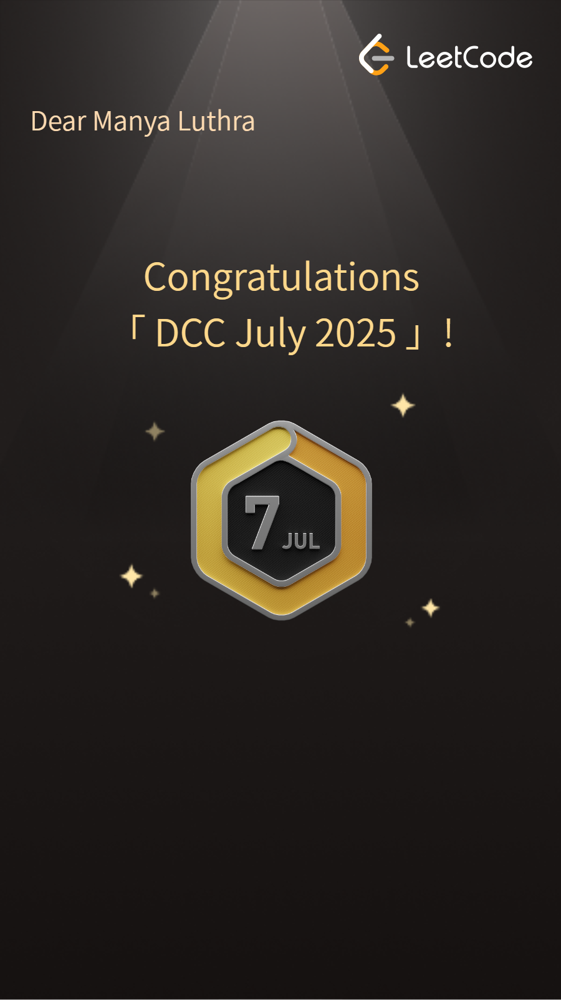

About Me
🚀 AI & ML Enthusiast passionate about building intelligent, real-world solutions through cutting-edge technology. Currently pursuing B.Tech in Computer Science (AI & ML) at The NorthCap University with a CGPA of 8.83.
💡 Innovation-Driven: Developed patented systems including a Water Management Solution (Indian Patent granted) and an Intelligent Refrigeration System (German Utility Patent filed), integrating IoT and AI to solve real-world challenges.
🏭 Industry Experience: Completed a software internship at Rockwell Automation, where I designed and implemented a Flask-based OCR web application using Tesseract and Azure SQL to automate equipment data extraction, reducing manual processing time significantly.
🎯 Technical Expertise: Proficient in Python, Java, Machine Learning, NLP, Computer Vision, IoT systems, and full-stack web development. Certified in Microsoft Azure AI Fundamentals and multiple frontend technologies.
🌟 Seeking Opportunities: Actively looking for internships and collaborations in ML/NLP, IoT, Computer Vision, and full-stack development to contribute to innovative projects and expand my technical horizons.


 
